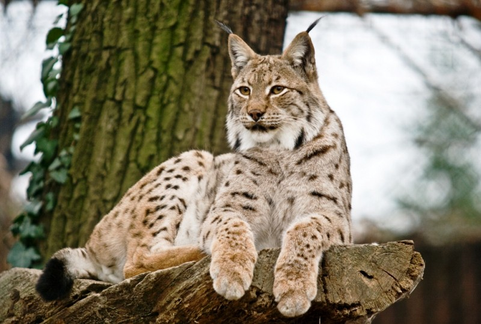

Рись – найбільша у Європі дика кішка. Рись – тварина, яка відрізняється грацією, але при цьому може бути дуже небезпечною. Це хижак. Однак рись ніколи не нападе на людину першою. Тобто – вона атакує, тільки коли їй намагаються заподіяти шкоду.